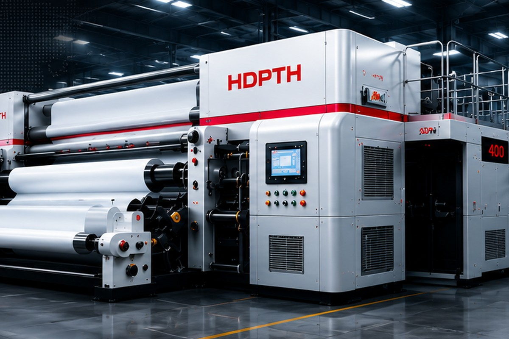

How to Choose a Nonwoven Slitter Rewinder for Wipes, Hygiene and Medical Materials
Target keyword: nonwoven slitter rewinder; nonwoven slitting rewinding machine; wipes converting machine. Intent: Purchase decision, supplier shortlisting, RFQ preparation and machine configuration comparison.
Read article